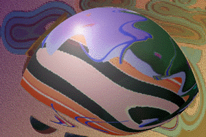

WHAT MAKES A BODY SWIG COUGH SYRUP? Agitation, uneasiness, a hankering for oblivion. . . .
The old man was a garbage man for the city. They paid him well to open boxes full of unmentionable things, everything unfit for the eye and the street. He came across some pretty evil shit in the public cans. He told me when I was a kid about the weird thrill he'd get lifting each new lid to see what was decomposing inside, then tossing it in along with the rest until a whole truckful had accumulated.
Don't take my bottle away!